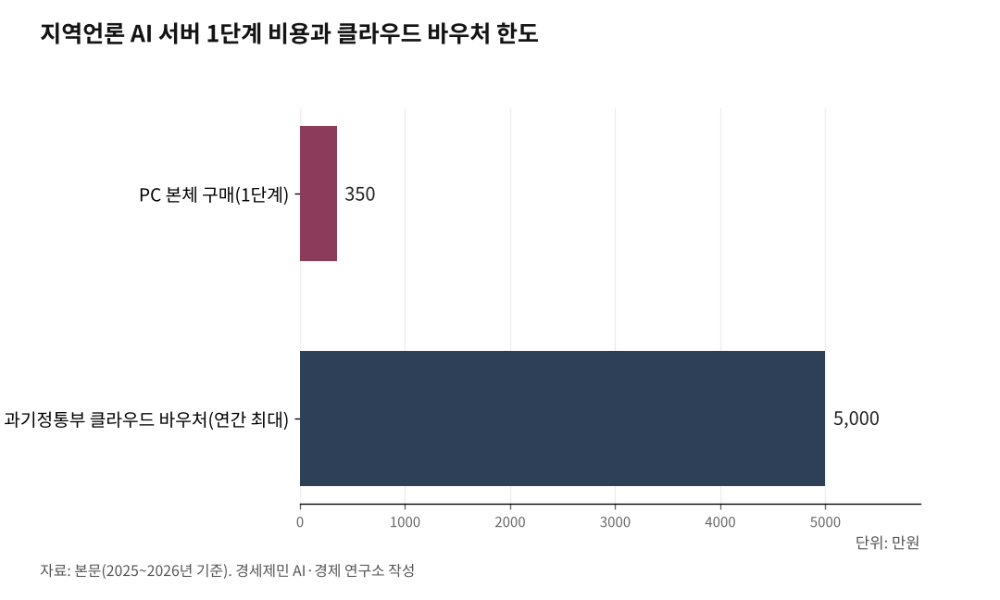

[AGI시대 지역언론③] 350만원에서 시작하는 지역언론 AI 서버
카나나 1.5-2.1B, 250만원대 그래픽카드 1장으로 구동
허깅페이스에서 내려받아 설치, 검색 증강 생성 연결 경로
개별 매체가 혼자 감당할 수 있는 규모
카카오가 공개한 한국어 AI 모델 카나나 1.5-2.1B를 250만~300만원대(한국일보 2025년 7월 보도) 그래픽카드 1장에 올리면 된다.
1. 카나나 1.5-2.1B, 250만원대 그래픽카드로 구동
카카오는 2025년 5월 23일 자체 개발 AI 모델 카나나 1.5를 공개했다. 이 가운데 카나나 1.5-2.1B(kakaocorp/kanana-1.5-2.1b-instruct-2505)는 매개변수(AI가 학습한 지식 단위) 21억개짜리 소형 모델이다.
아파치 2.0 허락증을 적용해 누구나 내려받아 상업적으로 자유롭게 쓸 수 있다(허깅페이스 모델 카드 확인). 한국어 성능 평가에서 같은 크기 모델 가운데 최고 수준을 기록했다.
이 모델은 엔비디아 RTX 4090(24GB) 그래픽카드 1장이면 추론과 미세조정 모두 가능하다. 추론만 하려면 RTX 3060(12GB)으로도 충분하다.

2. 허깅페이스에서 내려받아 파이썬으로 구동
카나나 1.5-2.1B는 허깅페이스(huggingface.co)에서 무료로 내려받는다. 파이썬(Python) 트랜스포머스(Transformers) 도구로 구동한다. 카카오 깃허브(github.com/kakao/kanana)에 설치 안내와 예제 코드가 공개돼 있다.
오라마(Ollama)로 구동할 수도 있다. 다만 카카오가 오라마 공식 모델 목록에 직접 등록하지는 않았다. 제3자가 변환해 올린 모델(cookieshake/kanana-1.5-2.1b-instruct-2505)을 내려받아 쓰는 방식이다.
3. 자사 기사를 벡터 저장소에 넣으면 검색 증강 생성 완성
검색 증강 생성(RAG)은 AI가 답변을 만들기 전에 먼저 자사 기사 저장소에서 관련 기사를 찾고, 찾은 기사를 근거로 답변을 생성하는 기술이다. 근거 없는 거짓 정보를 만들어내는 환각을 막는다.
구축 절차는 세 단계다. 첫째, 자사 기사를 500자 단위로 쪼갠다. 둘째, 쪼갠 글을 숫자 벡터(수치 배열)로 변환한다.
셋째, 변환한 벡터를 크로마DB(ChromaDB)라는 벡터 저장소에 넣는다. 독자가 질문하면 AI가 벡터 저장소에서 유사한 기사를 먼저 찾는다. 찾은 기사를 바탕으로 답변을 만들고 근거 기사 링크를 보여준다.
이 과정을 엮는 도구가 랭체인(LangChain)이다. 웹 화면은 스트림릿(Streamlit)으로 만든다. 파이썬을 다루는 개발자 1명이면 구축할 수 있다.
4. 1단계 비용: PC 본체 350만원, 전기세 수준 운영비
1단계 하드웨어 구성은 RTX 4090 24GB 그래픽카드 1장, 램(RAM) 32GB, SSD 1TB다. PC 전체 구매 비용은 약 350만원이다(2025~2026년 기준).
월 운영비는 전력비 수준이다. 소프트웨어는 모두 무료 공개 도구다.
2단계로 확장할 때는 클라우드 GPU를 빌린다. 과기정통부 클라우드 바우처(연간 최대 5000만원, 자부담 10~30%)를 쓰면 월 50만원 수준으로 A100 80GB를 임대할 수 있다.
5. 3개월 안에 기자용 대화형 도구 구축 가능
파일럿 일정은 3개월이면 충분하다. 첫 달에 PC를 구매하고 모델을 설치한다.
둘째 달에 기사 저장소를 벡터 저장소로 옮기고 검색 증강 생성 체계를 연결한다. 셋째 달에 스트림릿 웹 화면을 만들어 기자들이 시험한다.
3개월 파일럿 목표는 세 가지다. 기자가 자사 기사를 검색하는 시간을 줄이는 것, AI 요약 정확도를 확인하는 것, 독자 서비스 확장 가능성을 판단하는 것이다.
성과가 확인되면 2단계로 넘어간다. 카나나 8B나 솔라 프로 2 같은 더 큰 모델을 클라우드 GPU로 돌리면 독자용 대화형 검색까지 가능하다.
모든 과정은 개별 매체가 혼자 감당할 수 있는 규모다. 공동 서버나 컨소시엄 없이 1대 PC로 시작한다.
참고문헌
· 카카오, "자체 개발 'Kanana' 언어모델 4종 오픈소스 공개", 2025.5.23., https://www.kakaocorp.com/page/detail/11566
· 카카오 깃허브, 카나나 모델 안내, https://github.com/kakao/kanana
· 카카오 카나나 1.5-2.1B 허깅페이스 모델 카드(License: Apache 2.0), https://huggingface.co/kakaocorp/kanana-1.5-2.1b-instruct-2505
· 한국일보, "AI 발목 잡는 GPU 가격", 2025.7.22., https://www.hankookilbo.com/News/Read/A2025072110570001636
· 과기정통부 AI 기반시설 지원사업 총정리, https://www.xdnode.co.kr/solution/?bmode=view&idx=167169129
· 오라마 제3자 카나나 모델, https://ollama.com/cookieshake/kanana-1.5-2.1b-instruct-2505
※ 이 기사는 AI 프로그램 클로드를 활용해 작성했습니다.
사진 출처
· [대표사진] Farzad Nazifi euwars, "Coding workstation (Unsplash).jpg", 위키미디어 공용, CC0, https://commons.wikimedia.org/wiki/File:Coding_workstation_(Unsplash).jpg
※ 이 기사는 인공지능을 활용해 작성했습니다.
관련기사
- [AGI시대 지역언론④] AI 기사 시대, 저널리즘 원칙 지키는 세 기둥
- [AGI시대 지역언론②] 빅카인즈 API 연동, 별도 비용 없이 AI 검색 개통
- [AGI시대 지역언론①] 자체 AI서비스 가능 조건은 서버
- [AGI시대 지역언론⑤] 오픈소스로 열린 지역언론 AI, 재원 구조가 발목
저작권자 © AI경세제민 무단전재 및 재배포, AI학습 및 활용 금지